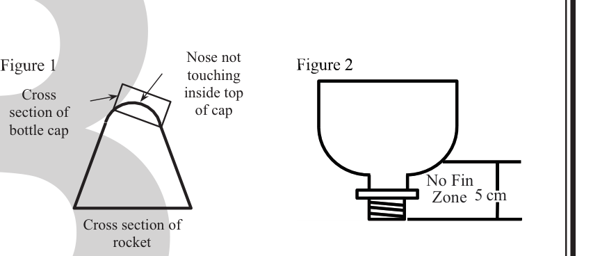

Build · Division B · 2026–2027 Season
Prior to the tournament, teams will design, build, and bring up to two bottle rockets to the
tournament to launch a ping pong ball attached to a parachute to stay aloft for the greatest amount of time.
A TEAM OF UP TO: 2 APPROXIMATE TIME: 5 minutes
EYE PROTECTION: B
parachute assembly makes up the parachute payload system.
and timing devices. Teams may bring their own manual bicycle pump with a pressure gauge to use, but
it must attach to the launcher provided by the Event Supervisor. Event supervisors are encouraged to
make multiple launchers available with slightly differing connection widths (21.5 mm - 22.0 mm
diameters). Connection of the air pump to the launcher must be completed before timing begins
for the students. Connection to the launcher must be completed before timing begins for the
students. If a rocket is not maintaining pressure with one launcher, students must be allowed to
change launchers (if available) while the timer is stopped.
directors must provide the ceiling height (in feet) to teams with as much advance notice as possible.
Extreme care must be taken to protect the floor and ceiling of any inside facilities used for practice and
competition. Tournament officials are encouraged to reduce air flow (HV AC, doors opening, etc.)
as much as possible.
single 1-liter or less plastic carbonated beverage
bottle with a nozzle opening internal diameter of
approximately 2.2 cm and a standard neck height
from flange to bottle’s opening of under 1.6 cm.
The bottle label must be presented.
must not be altered. This includes, but is not
limited to: physical, thermal or chemical damage
(e.g., cutting, sanding, using hot or super glues, spray painting).
cap (~3.1 cm diameter x 1.25 cm tall) is placed on top of the nose, no portion of the nose touches the
inside top of the bottle cap (see Figure 1).

may be used on the pressure vessel. Metal of any type is prohibited anywhere on the rocket or parachute
payload system.
ensure rockets fit on the launcher (see Figure 2).
the air pump through the launcher; water is not allowed to be used. Gases other than air, explosives,
liquids, chemical reactions, pyrotechnics, electrical devices, elastic powered flight assists, throwing
devices, remote controls, and tethers are prohibited at all times.
per the Building Policy found on www.soinc.org.
more parameters (three required and at least two additional) for 10 or more test flights prior to the
competition. The required parameters are: 1) pressure (psi), 2) estimated peak flight height (feet), 3) time
aloft (seconds). The additional parameters are chosen by the team (examples include: number of fins,
parachute diameter, etc.)
or does not include data for at least 10 total flights.
incomplete flight log will not be allowed to be pressurized beyond an event-supervisor determined
safe pressure that will be the same for all teams without complete practice logs and will ensure
rockets will not reach the ceiling. Additionally, teams without a flight log will have their final score
multiplied by 0.7 and teams with an incomplete flight log will have their final score multiplied by
0.85.
rocket(s) inspected for safety.
NOT pressurized, teams will place the parachute payload system on or in the rocket. After the payload
parachute system is loaded it cannot be manipulated. Teams will then pressurize the rocket to the pressure
(psi) of choice based on their practice log data. The Event Supervisor will check the gauge on the pump
to ensure the rocket is pressurized to the psi chosen and justified by the team’s data.
announcement of, “3, 2, 1, LAUNCH!” Then a team member will proceed to launch the rocket. After
launching, the team will prepare for the next launch.
lands. The parachute payload system must separate from the rocket.
from the launcher to when any part of the rocket touches the ground. This launch is penalized with a
multiplier of 0.90.
(e.g., a rafter, light, basketball hoop) during the ascending portion of the launch, then timing is stopped
at the instant of contact. That launch is penalized with a multiplier of 0.25.
launch never occurs and the launch can be restarted.
second. The middle value is the officially recorded time.
the event area.
a rocket unable to make any launches will receive participation points only.
launch.
separate from the rocket.
log.
system strikes the ceiling or any part connected to the ceiling on the ascending portion of the
launch.